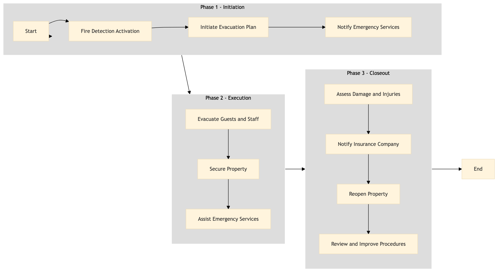

| Role | Steps |
|---|---|
| Security Officer | 1.1 1.3 2.1 2.3 |
| General Manager | 1.2 3.1 3.2 3.4 |
| Front Desk Agent | 2.1 |
| Housekeeping Staff | 2.1 |
| Maintenance Staff | 2.2 3.3 |
| Medical Staff | 3.1 |
| Step | Name | Role | System | Input | Output | KPI | Dec? | Exc? | Pain Point / Risk |
|---|---|---|---|---|---|---|---|---|---|
| 1.1 | Fire Detection Activation | Security Officer | Oracle OPERA Cloud | Fire alarm signal | Alert to all departments | Less than 5 seconds | N | Y | False alarms can lead to unnecessary evacuations. |
| 1.2 | Initiate Evacuation Plan | General Manager | Oracle OPERA Cloud | Alert from Security Officer | Evacuation order | Less than 30 seconds | Y | N | Delays in initiating the evacuation plan can lead to panic. |
| 1.3 | Notify Emergency Services | Security Officer | Oracle OPERA Cloud | Evacuation order | 911 call confirmation | Less than 60 seconds | N | Y | Lost communication with emergency services can delay response. |
| 2.1 | Evacuate Guests and Staff | Front Desk Agent, Housekeeping Staff, Security Officer | Oracle OPERA Cloud | Evacuation order | All occupants safely evacuated | Less than 5 minutes | Y | N | Difficulty in evacuating guests with disabilities or those who require assistance. |
| 2.2 | Secure Property | Security Officer, Maintenance Staff | Oracle OPERA Cloud | Evacuation order | Property secured against re-entry | Less than 10 minutes | N | Y | Unauthorized re-entry by guests or staff can cause further damage. |
| 2.3 | Assist Emergency Services | Security Officer, Maintenance Staff | Oracle OPERA Cloud | Emergency services arrival confirmation | Cooperation with emergency responders | Less than 2 minutes | Y | N | Ineffective communication with emergency services can hinder response. |
| 3.1 | Assess Damage and Injuries | General Manager, Medical Staff | Oracle OPERA Cloud | Fire extinguished confirmation | Damage assessment report | Less than 30 minutes | N | Y | Inaccurate damage assessment can lead to improper insurance claims. |
| 3.2 | Notify Insurance Company | General Manager, Property Management Staff | Oracle OPERA Cloud | Damage assessment report | Insurance claim submission | Less than 1 hour | Y | N | Delays in insurance claims can lead to financial strain. |
| 3.3 | Reopen Property | General Manager, Maintenance Staff | Oracle OPERA Cloud | Insurance approval and repair completion | Property reopened for business | Less than 24 hours | N | Y | Long reopen times can impact revenue. |
| 3.4 | Review and Improve Procedures | General Manager, Safety Officer | Oracle OPERA Cloud | Incident report | Updated emergency response plan | Less than 7 days | Y | N | Failure to review procedures can lead to similar incidents in the future. |
This process outlines the fire emergency response and evacuation procedures at a full-service Marriott hotel. It ensures quick and effective action to protect guests and staff while minimizing property damage.